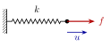
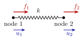
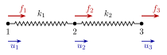
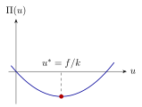
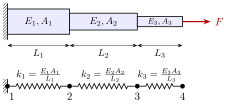

Lecture 1
Springs, Nodes, and the Stiffness Method
1.1 One spring
The simplest mechanical model in existence: a linear spring of stiffness \(k\), fixed to a wall at one end, pulled by a force \(f\) at the other (Fig. 1.1). The free end moves by a displacement \(u\), and for a linear spring the two are proportional: \[f = k\,u . \tag{1.1}\] That is the whole model. The stiffness \(k\) (units N/m) says how much force is needed per unit of displacement. Given any two of \((f,u,k)\) you can find the third. Everything that follows in this course — including a million-degree-of-freedom crash simulation — is equation (1.1) repeated many times and organized well.

1.2 A spring as an element: two nodes
Now cut the spring free from the wall. A free spring connects two points — we call them nodes and number them 1 and 2. Each node has a displacement (\(u_1\), \(u_2\)) and a force applied to it (\(f_1\), \(f_2\)), all positive to the right (Fig. 1.2).

What matters to the spring is not where its ends are but how much it is stretched: the elongation \(\Delta = u_2 - u_1\). The spring then carries an internal force \(N = k\,\Delta\) (positive in tension). For the spring to be in equilibrium, the nodal forces must be \(f_2 = N\) and \(f_1 = -N\). Writing this out, \[f_1 = k(u_1 - u_2), \qquad f_2 = k(u_2 - u_1),\] or, in matrix form, \[\underbrace{\begin{bmatrix} k & -k\\ -k & k \end{bmatrix}}_{\textstyle \mathbf{k}^e} \begin{bmatrix} u_1\\ u_2 \end{bmatrix} = \begin{bmatrix} f_1\\ f_2 \end{bmatrix}. \tag{1.2}\] A word about the arrows in Fig. 1.2, because they trip up almost everyone once. They show the positive directions — a sign convention — not the directions the forces “really” act. Displacements and forces must share one convention (here: \(+x\) for all four quantities), otherwise the matrix equation (1.2) cannot hold as written. The physics then lives in the signs: stretch the spring (\(u_2>u_1\), so \(N>0\)) and (1.2) returns \(f_1 = -N < 0\) — the force on node 1 physically points left, exactly as your intuition expects for holding a stretched spring. You may have seen free-body sketches with the two end arrows drawn opposing each other; those depict the internal force \(N\) in a particular state (tension), which is a different — equally correct — picture. For nodal quantities we always draw the convention, never one particular state: the convention is also what makes conjugate pairs work, since the product \(f_i u_i\) is only a meaningful work when both are measured along the same positive direction.
The matrix \(\mathbf{k}^e\) is the element stiffness matrix. Two observations, both of which will follow us for the rest of the course:
\(\mathbf{k}^e\) is symmetric. (Why this is no accident we will see in Section 1.6.)
\(\mathbf{k}^e\) is singular: its determinant is \(k^2-k^2=0\), and indeed \(\mathbf{k}^e\begin{bmatrix}1\\1\end{bmatrix}=\mathbf{0}\). Physically: if both nodes move by the same amount, the spring is not stretched and produces no force. The element cannot tell you where it is, only how much it is deformed. This is called a rigid body mode, and it is the deep reason why boundary conditions will be unavoidable in Section 1.5.
1.3 Two springs, three nodes: assembly
Connect two springs in a chain: spring \(k_1\) between nodes 1 and 2, spring \(k_2\) between nodes 2 and 3 (Fig. 1.3). External forces \(f_1,f_2,f_3\) may act on the nodes.

Each spring obeys its own equation (1.2). The only new physics is at the shared node 2: the external force \(f_2\) must balance the pull of both springs. Node by node: \[\begin{aligned} \text{node 1:}\quad & k_1(u_1-u_2) = f_1,\\ \text{node 2:}\quad & k_1(u_2-u_1) + k_2(u_2-u_3) = f_2,\\ \text{node 3:}\quad & k_2(u_3-u_2) = f_3 . \end{aligned}\] In matrix form, \[\underbrace{\begin{bmatrix} k_1 & -k_1 & 0\\ -k_1 & k_1+k_2 & -k_2\\ 0 & -k_2 & k_2 \end{bmatrix}}_{\textstyle \mathbf{K}} \begin{bmatrix} u_1\\u_2\\u_3 \end{bmatrix} = \begin{bmatrix} f_1\\f_2\\f_3 \end{bmatrix}, \qquad\text{short:}\quad \mathbf{K}\,\mathbf{u}=\mathbf{f}. \tag{1.3}\] Now look closely at \(\mathbf{K}\). It is exactly the two element matrices added into the right places of a \(3\times3\) grid: \[\mathbf{K} = \begin{bmatrix} \textcolor{blue!60!black}{k_1} & \textcolor{blue!60!black}{-k_1} & 0\\ \textcolor{blue!60!black}{-k_1} & \textcolor{blue!60!black}{k_1}+\textcolor{red!65!black}{k_2} & \textcolor{red!65!black}{-k_2}\\ 0 & \textcolor{red!65!black}{-k_2} & \textcolor{red!65!black}{k_2} \end{bmatrix} \qquad \begin{array}{l} \textcolor{blue!60!black}{\text{element 1 occupies rows/columns }(1,2)}\\[1mm] \textcolor{red!65!black}{\text{element 2 occupies rows/columns }(2,3)} \end{array}\] This operation — add each element’s small matrix into the global matrix according to which nodes the element connects — is called assembly. Nothing about it is specific to two springs.
1.4 Assembly in general
For a chain of \(m\) springs and \(n=m+1\) nodes the procedure is mechanical:
Key idea
Assembly. Start with an \(n\times n\) matrix of zeros. For each element \(e\) connecting nodes \((i,j)\) with stiffness \(k_e\), add \[+k_e \text{ to } K_{ii} \text{ and } K_{jj},\qquad -k_e \text{ to } K_{ij} \text{ and } K_{ji}.\] The result \(\mathbf{K}\) is the global stiffness matrix; the equations of all nodes together read \(\mathbf{K}\mathbf{u}=\mathbf{f}\).
Three properties come for free, and you should verify each on equation (1.3):
Symmetry: \(K_{ij}=K_{ji}\), inherited from the elements.
Sparsity: \(K_{ij}=0\) whenever nodes \(i\) and \(j\) share no element. In the chain, node 1 does not touch node 3, so \(K_{13}=0\). For \(1000\) nodes in a chain, \(\mathbf{K}\) has \(10^6\) entries of which only about \(3000\) are nonzero. Real FEM programs never store the zeros.
Singularity: every row sums to zero, so \(\mathbf{K}\,[1,1,\dots,1]^{\mathsf{T}}=\mathbf{0}\). Shifting the whole chain rigidly produces no forces. \(\mathbf{K}\) alone can never be inverted.
The third point is not a defect of our bookkeeping; it is physics. A structure floating freely in space does not have a well-defined position, so the equations cannot possibly determine \(\mathbf{u}\) uniquely. Something must hold the structure. That something is the subject of the next — and most important — section.
1.5 Boundary conditions and conjugate quantities
At each node \(i\) live two quantities: the displacement \(u_i\) and the force \(f_i\). They are called conjugate: their product \(f_i\,u_i\) is a work (we return to this in Section 1.6). The central rule of the whole subject is:
Key idea
One of each pair. At every node (more generally: every degree of freedom), exactly one of the pair \((u_i, f_i)\) must be prescribed, and the other is then computed:
prescribe \(u_i\) (a support, possibly moving): the force \(f_i\) becomes an unknown reaction supplied by the support;
prescribe \(f_i\) (a load — and a free node is simply the load \(f_i=0\)): the displacement \(u_i\) is unknown.
Prescribing both would in general contradict the physics; prescribing neither leaves the problem underdetermined. And at least one displacement must be prescribed somewhere, otherwise the rigid body mode survives and \(\mathbf{K}\) cannot be inverted.
Note the easily missed point: a node with “nothing” attached is not a node with no boundary condition — it is a node with the known force \(f_i=0\). Every degree of freedom always carries exactly one known and one unknown.
Worked example A: fix one end, pull the other
Take the chain of Fig. 1.3 with \(k_1=k_2=k\), prescribe \[u_1 = 0 \quad(\text{support}), \qquad f_2 = 0,\qquad f_3 = F .\] Unknowns: \(u_2,\,u_3\) and the reaction \(f_1\). Because \(u_1\) is known, we take rows 2 and 3 of (1.3) and move the known \(u_1\) to the right-hand side (here it is zero anyway): \[\begin{bmatrix} 2k & -k\\ -k & k \end{bmatrix} \begin{bmatrix} u_2 \\ u_3 \end{bmatrix} = \begin{bmatrix} 0\\ F \end{bmatrix} \quad\Longrightarrow\quad u_2 = \frac{F}{k},\qquad u_3 = \frac{2F}{k}.\] The reduced \(2\times2\) matrix is not singular — fixing \(u_1\) removed the rigid body mode. Finally, the first row of (1.3), which we set aside, now pays us back: it yields the reaction \[f_1 = k\,u_1 - k\,u_2 = -F .\] As it must: the wall pulls back with exactly the applied load. Checking reactions against overall equilibrium is the cheapest sanity check in FEM — use it always.
Worked example B: prescribed displacements, computed forces
Same chain, but now no force is applied; instead we grab node 3 and drag it: \[u_1 = 0,\qquad f_2 = 0,\qquad u_3 = \delta \ (\text{prescribed}).\] Now only \(u_2\) is unknown. Row 2 of (1.3): \[-k\,u_1 + 2k\,u_2 - k\,u_3 = 0 \quad\Longrightarrow\quad u_2 = \tfrac{\delta}{2},\] and rows 1 and 3 give the reactions \[f_1 = -k\,u_2 = -\tfrac{k\delta}{2}, \qquad f_3 = -k\,u_2 + k\,\delta = +\tfrac{k\delta}{2}.\] Equal and opposite — the two supports pull the chain apart (tension \(N = k\delta/2\)). Notice the perfect symmetry with example A: there we knew forces and computed displacements; here we know displacements and compute forces. The machinery does not care which way around; it only insists on one known per node.
The general recipe: partitioning
Sort the degrees of freedom into free ones (force known, displacement unknown) and prescribed ones (displacement known, force unknown), and partition the global system accordingly: \[\begin{bmatrix} \mathbf{K}_{ff} & \mathbf{K}_{fp}\\ \mathbf{K}_{pf} & \mathbf{K}_{pp} \end{bmatrix} \begin{bmatrix} \mathbf{u}_f\\ \mathbf{u}_p \end{bmatrix} = \begin{bmatrix} \mathbf{f}_f\\ \mathbf{f}_p \end{bmatrix}, \qquad \text{$\mathbf{u}_p$, $\mathbf{f}_f$ known;\quad $\mathbf{u}_f$, $\mathbf{f}_p$ unknown.} \tag{1.4}\] The top block is solved first, the bottom block is then evaluated: \[\boxed{\; \mathbf{K}_{ff}\,\mathbf{u}_f = \mathbf{f}_f - \mathbf{K}_{fp}\,\mathbf{u}_p , \qquad \mathbf{f}_p = \mathbf{K}_{pf}\,\mathbf{u}_f + \mathbf{K}_{pp}\,\mathbf{u}_p .\;} \tag{1.5}\] Redo examples A and B with (1.5) and watch both fall out of the same two lines. The term \(-\mathbf{K}_{fp}\mathbf{u}_p\) is how a nonzero prescribed displacement enters the load side: dragging a support acts exactly like a set of equivalent forces.
Remark
Load cases. \(\mathbf{K}_{ff}\) depends only on the structure and on which DOFs are fixed — not on the load values. Different load combinations (self-weight, wind, a dragged support, …) are just different right-hand sides in (1.5). A program factorizes \(\mathbf{K}_{ff}\) once and back-substitutes once per load case — this is why adding the 37th load case to a large model is almost free.
1.6 Energy: a second road to the same equations
There is another way to find the equilibrium equations, so different in spirit that it deserves its own section — and it will reappear in Lecture 2 as the deeper meaning of Galerkin’s method.
A spring stretched by \(\Delta\) stores the elastic energy \(\tfrac12 k \Delta^2\) (the area under the force–elongation line). A constant force \(f\) acting through a displacement \(u\) does the work \(f\,u\); the potential of the load is \(-f\,u\). Define the total potential energy of the loaded structure as stored energy minus work done by loads. For the single wall-mounted spring of Fig. 1.1: \[\Pi(u) = \tfrac12 k u^2 - f u .\] Nature chooses the displacement that minimizes \(\Pi\) (Fig. 1.4). Setting the derivative to zero: \[\frac{\mathrm{d}\Pi}{\mathrm{d}u} = k u - f = 0 \quad\Longleftrightarrow\quad k u = f .\] The equilibrium equation is the minimum condition of an energy. For the general assembled system the same computation reads \[\Pi(\mathbf{u}) \;=\; \underbrace{\tfrac12\,\mathbf{u}^{\mathsf{T}}\mathbf{K}\,\mathbf{u}}_{\text{stored}} \;-\; \underbrace{\mathbf{u}^{\mathsf{T}}\mathbf{f}}_{\text{work of loads}}, \qquad \frac{\partial \Pi}{\partial \mathbf{u}} = \mathbf{K}\mathbf{u} - \mathbf{f} = \mathbf{0}. \tag{1.6}\] (If matrix calculus is new to you: write out \(\Pi\) for the two-spring chain and take \(\partial\Pi/\partial u_2\) by hand; you will recover exactly the node-2 equation of (1.3).)

Why bother with a second derivation of equations we already had? Three reasons:
It explains the symmetry of \(\mathbf{K}\): a symmetric matrix is exactly what second derivatives of a scalar function produce (\(K_{ij} = \partial^2\Pi/\partial u_i\,\partial u_j\)).
It explains conjugate: force and displacement are partners in the work term \(\mathbf{u}^{\mathsf{T}}\mathbf{f}\). Pairs whose product is energy are precisely the pairs of which you may prescribe one member each.
In Lecture 2, when displacement becomes a function \(u(x)\) rather than a list of numbers, “take the derivative and set it to zero” will mature into the weak form — the heart of FEM. The idea, however, will be exactly the parabola of Fig. 1.4.
1.7 From springs to bars: enter \(E\), \(A\), \(L\)
So far, stiffness \(k\) was handed to us. Now let the “spring” be a real structural member: a straight bar (truss member) of length \(L\), cross-section area \(A\), made of a material with Young’s modulus \(E\). Pull it with an axial force \(N\): \[\text{stress } \sigma = \frac{N}{A}, \qquad \text{strain } \varepsilon= \frac{\sigma}{E}, \qquad \text{elongation } \Delta L = \varepsilon\,L = \frac{N L}{E A}.\] Read backwards: \[N = \underbrace{\frac{EA}{L}}_{\textstyle k}\,\Delta L . \tag{1.7}\]
Key idea
A uniform elastic bar is a linear spring with \(\;k = EA/L\). Everything in this lecture — element matrix, assembly, boundary conditions, energy — applies verbatim.

A stepped bar — segments of different \(E_i\), \(A_i\), \(L_i\) placed end to end, nodes wherever segments meet (Fig. 1.5) — becomes a chain of springs with \(k_i = E_iA_i/L_i\). Non-uniform spacing costs nothing: each element brings its own length.
Mini-example.
Steel bar (\(E=200\,\)GPa) in two segments: \(A_1 = 200\,\mathrm{mm}^2\), \(L_1=1\) m and \(A_2=100\,\mathrm{mm}^2\), \(L_2=0.5\) m; left end fixed, \(F=10\) kN at the right end, no load at the middle node. Then \[k_1 = \frac{200\cdot10^9 \cdot 200\cdot10^{-6}}{1} = 40\,\mathrm{MN/m}, \qquad k_2 = \frac{200\cdot10^9 \cdot 100\cdot10^{-6}}{0.5} = 40\,\mathrm{MN/m},\] so, reusing worked example A with \(k=40\) MN/m: \(u_2 = F/k = 0.25\) mm, \(u_3 = 0.50\) mm, reaction \(-10\) kN. Two different geometries, same stiffness — the kind of coincidence that keeps hand checks honest.
1.8 What we can and cannot do yet
Take stock. We can model any series (and, with a little thought, parallel) arrangement of springs and uniform bars; assemble; apply any legal combination of prescribed forces and displacements; solve; recover reactions and internal member forces. A computer implementation is a loop over elements (assembly), a reordering (partitioning), and one call to a linear solver. This is the finite element method in its discrete-structure form, and Lecture 3 will take it to 2D trusses with no new concepts beyond geometry.
But now ask: what if the load is not applied at discrete points, but distributed — a bar hanging under its own weight? What if the cross-section varies continuously, \(A(x)\)? Where should the nodes go then, and what happens between them? Our spring model is silent: it has no “between”. The displacement is no longer a short list of numbers \(u_1,\dots,u_n\) but a function \(u(x)\) — one value at each of infinitely many points.
Looking ahead
To handle functions we need to restate the whole problem as a boundary value problem: a differential equation with boundary conditions. That restatement, and the systematic art of feeding it back to a finite number of unknowns, is Lecture 2. The reward at the end: the element matrix \(\frac{EA}{L}\left[\begin{smallmatrix}1&-1\\-1&1\end{smallmatrix}\right]\) will reappear — this time derived, not drawn — together with a recipe that works equally well for heat flow, and later for triangles in the plane where intuition alone cannot carry us.